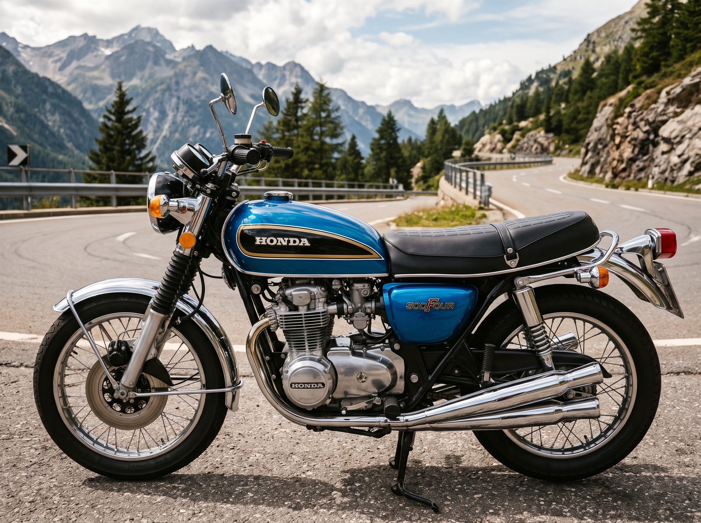

I Nostri Lavori Recenti
Nota interattiva: Clicca o tocca le immagini qui sotto per scoprire i dettagli tecnici dell'intervento e visualizzare i crediti fotografici!

Test su Strada:
Dopo il collaudo finale, la CB500 Four affronta con grinta le curve di montagna. L'erogazione è tornata fluida e la tenuta di strada è impeccabile grazie alle forcelle revisionate.

Dettagli Originali:
Conservazione maniacale della verniciatura originale e lucidatura a specchio dei quattro inconfondibili terminali di scarico, vero simbolo dell'epoca d'oro Honda.